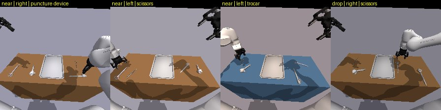

Synthetic dataset generation and SmolVLA fine-tuning for surgical instrument handover on a dual-arm Franka FR3 system

Given a spoken request such as "hand me the trocar", a bimanual Franka FR3 picks the named instrument with the nearer arm and places it on the tray. I built a simulation pipeline that generates expert demonstrations, publishes them as versioned LeRobot datasets and fine-tunes the SmolVLA vision-language-action model on a laptop GPU. Closed-loop evaluation of v1 guided the v2 dataset, which adds near-target and drop-recovery start states for more robust grasping.
1,024episodes published
100%scripted expert success
60 / 60CPU vs GPU physics parity
IK expert→Newton GPU worlds→LeRobot dataset→SmolVLA→held-out eval
MuJoCoNVIDIA NewtonLeRobotSmolVLAPyTorchHugging Face